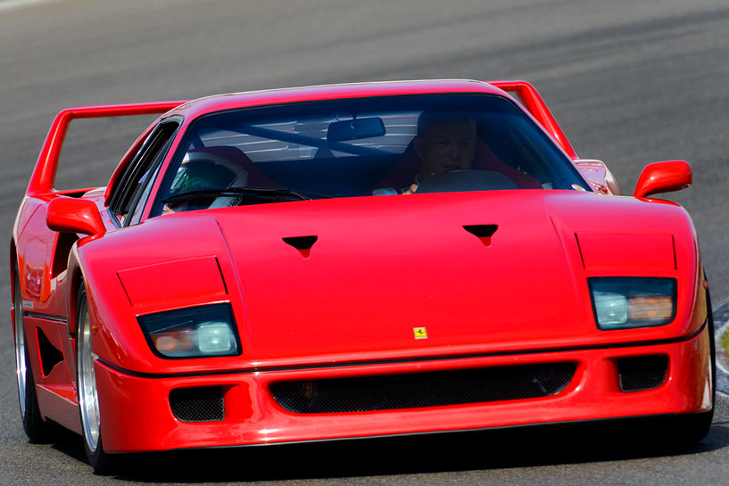

El Ferrari F40 es uno de los supercoches más icónicos de finales de los 80 y principios de los 90, junto con el Lamborghini Countach y Porsche 959. El pasado 21 de julio de 2017, este cavallino rampante ha celebrado sus 30 años de vida, desde su presentación en Maranello, en lo que, ahora, es el museo Ferrari. Si quieres saber más sobre este deportivo, basta con que repases nuestra supergalería de imágenes, compuesta por más de 200 fotos. El Ferrari F40 nació con la misión de celebrar los 40 años del fabricante italiano y fue concebido como la máxima expresión de las proezas de la marca en ingeniería. Además, fue el último coche de la marca desarrollado bajo la tutela de Enzo Ferrari, antes de su muerte en agosto de 1988. "Nunca he vivido una presentación como la del F40. Cuando el coche se desveló, use escucho un silbido que precedió a un aplauso atronador", afirmó Ermanno Bonfiglioli, jefe de Proyectos Especiales de Ferrari en aquella época. Ninguno, salvo los socios más cercanos a Enzo Ferrari, lo había visto todavía.
Ferrari F40
Ficha Técnica
| Potencia | 400 Hp a 6,800 rpm |
|---|---|
| Torque | 346.6 lb/ft a 4,400 rpm |
| Motor | Seis cil. en línea |
| Cilindrada | Aprox. 2,800 cm^3 |
| Peso | 1550 Kg |
| 0 a 100 Km/h | 4.0 s |
Artículo consultado:
https://es.motor1.com/news/174633/ferrari-f40-30-aniversario/